Many mathematical and industrial problems can be translated to formulas consisting of polynomial equations, inequalities, quantifiers (
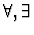
) and Boolean operators (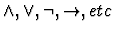
). Such formulas construct sentences in the so-called first-order theory of real closed fields and are called first-order formulas.Let
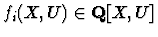
,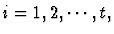
where Q is the fields of rational numbers,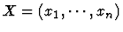
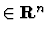
a vector of quantified variables, and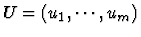
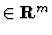
a vector of unquantified parameter variables. Let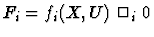
, where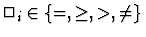
,\ne \}$">, for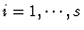
,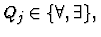
and Xj a block of qj quantified variables for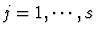
. In general, quantified formula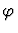
is given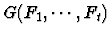
is a quantifier-free (qf) Boolean formula.QE procedure is an algorithm to compute equivalent qf formula for a given first-order formula. If all variables are quantified, i.e. m=0, QE procedure decides whether the given formula (5) is true or false. This problem is called decision problem. When there are some unquantified variables U, QE procedure find a qf formula
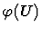
describing the range of possible U where is true. If there is no such range QE outputs false. This problem is called general quantifier elimination problem.The history of the algorithms QE begins with Tarski-Seidenberg decision procedure in 1950's ([17],[14]). But this is intricate and far from feasible. In 1975, Collins presented a more efficient general purpose QE algorithm based on Cylindrical Algebraic Decomposition (CAD) [5]. The algorithm has improved by Collins and Hong in [6] and was implemented on SACLIB as ``QEPCAD'' by Hong. Weispfenning also presented a very efficient QE algorithm based on test terms [18],[19]. Though there is some degree restriction of a quantified variable in input formulas for this approach, it seems very practical. Implementation of the method was done on Reduce as ``REDLOG'' and Risa/Asir 1 [13] by Sturm [15], [16]. Here we use both QE implementation on Risa/Asir and REDLOG.